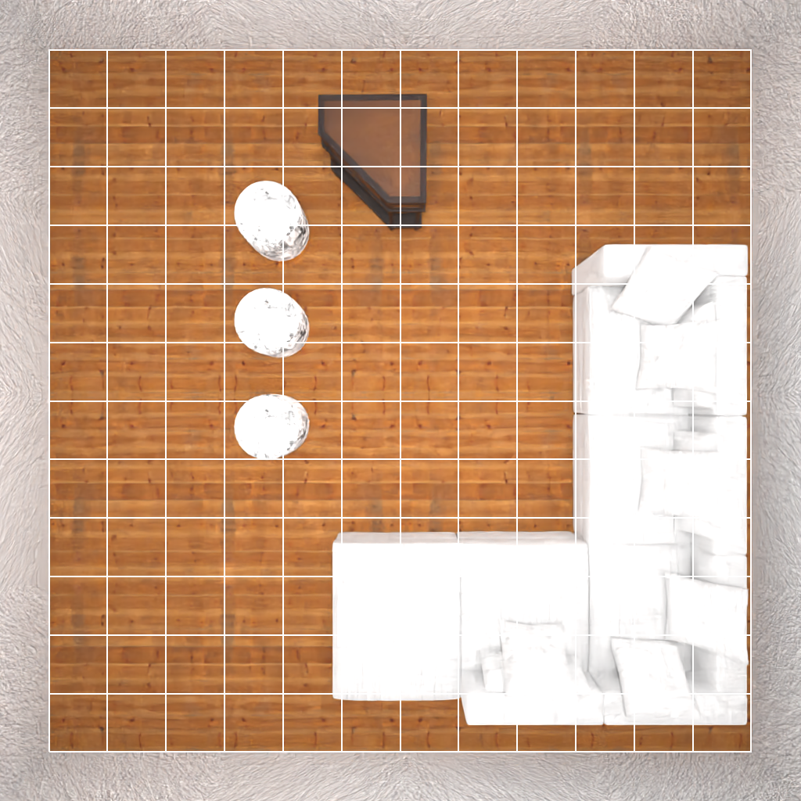
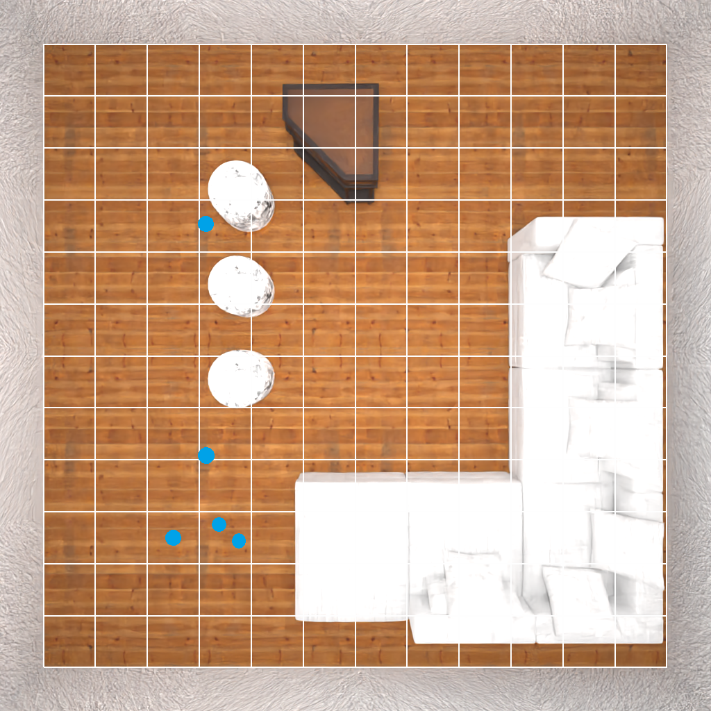
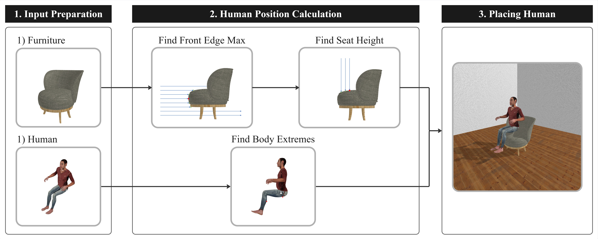

This prompt is for generating our scenario specifications (human description, environment description, task description). We define a fixed system prompt to provide instructions to the LLM, and the user prompt provides specific guidance. This user prompt is the initial input to our pipeline.
You are generating scenario specifications for assistive human-robot interaction simulation.
For each scenario, you MUST simultaneously generate three coupled natural-language descriptions:
1) human_description: physical attributes (morphology + a categorical posture)
2) environment_description: room classification + essential furniture that supports the posture and task
3) task_description: a specific assistive robot action grounded to a target body area or body parts
Coupling requirement (critical):
- The three descriptions must be intrinsically consistent: the environment must support the posture and enable the task; the task must make sense given the posture and environment; the human posture must be supported by the furniture.
Human description requirements:
- Include height, overall body size, and fatness or muscularity using realistic adjectives.
- Include exactly one categorical posture (e.g., sitting, standing, lying down). Don't use complex description.
- Avoid any numeric measurements and avoid age numbers.
Environment description requirements:
- Specify exactly one room type.
- Mention essential furniture needed to support the posture and task (e.g., couch for sitting).
- Keep it concise and concrete.
Task description requirements:
- Describe a plausible assistive action the robot performs for the person.
- Must be spatially grounded to specific target body areas or parts (e.g., "left forearm between wrist and elbow", "upper back", "right shoulder").
- Avoid vague tasks like "helps them" without specifying contact region.
Diversity requirement:
- Imagine many possibilities and sample tail, low-probability yet plausible scenarios with high diversity.
Brevity constraints (STRICT):
- Each of the three fields must be a single short clause (not multiple sentences).
- human_description: 12-18 words max; include only {height adjective + build adjective + posture}. No extra anatomy details.
- environment_description: 8-14 words max; include only {room type + 1 essential furniture}. No material/lighting/atmosphere details.
- task_description: 10-18 words max; format: "A robot <verb phrase> the person's <body region>."
- Avoid vivid/medical/graphic descriptors (e.g., ribcage, skeletal, frail, obese, gaunt). Use neutral adjectives.
- No uncommon locations.
Output format (STRICT):
Output ONLY 5 <response> blocks and nothing else.
Each block must be:
<response>
<text>
{JSON}
</text>
<probability>p</probability>
</response>
Where JSON must contain exactly these keys:
- "human_description"
- "environment_description"
- "task_description"
Additional format rules:
- Use double quotes for JSON strings.
- Do not include extra keys.
- <probability> must be a float < 0.10.The human should be sitting posture, the furniture should be chosen from the following: ['sofa', 'chair', 'pouf', 'regular-chair', 'bench', 'bed', 'kidsfurniture-bed'].Note: The available furniture choices here are extracted automatically from the scene generation dataset.
The robot task should be scratching an itch on the person's left forearm.These prompts are for the generating human body shape parameters, as part of the human generation process. The other part of the process involves generating human body pose parameters (see the next tab).
Recall that we employ a two-stage prompting process, where the first-stage prompt generates detailed human body shape descriptions, and the second-stage prompt generates actual parameters.
In the first-stage prompt, ${human_description} is filled in with the human description generated from scenario specification, and in the second-stage prompt, ${high_level_description} is filled in with the LLM response of the first stage.
You are a creative and realistic character designer who describes human body shapes for 3D modeling (SMPL-X).
Generate short, natural English descriptions (1~3 sentences) of a person's body type, build, and proportions.
Requirements:
- The description should mention height, body size, and fatness or muscularity.
- Use realistic, human-like adjectives (e.g. tall, short, slender, stocky, athletic, chubby, lean, broad-shouldered).
- Avoid any specific numbers (no meters, kilograms, or age numbers).
- The text must describe one person only.
- Vary gender, age group, and physique diversity across generations.
- Keep it suitable for neutral 3D modeling (no clothes, no style, no emotions).
Output just the description sentence, nothing else.
Example output:
"a tall but slightly chubby man"
```Input Description
${human_description}
```You are an expert in 3D human body modeling using the SMPL-X parametric model.
Your task is to infer the first two body shape parameters (beta[0], beta[1]) and the gender of the model
from natural language descriptions of a person's body appearance.
SMPL-X beta parameters have the following meanings:
- beta[0]: overall body size (height & weight). Larger → taller and heavier; smaller → shorter and lighter.
- beta[1]: body fatness. Larger → fatter and rounder body; smaller → thinner and leaner body.
Gender should only be male, female and neutral. You should output "neutral" if the description does not include information of gender.
Note:
- Each beta value typically ranges from -3.00 to +3.00.
- Think of beta_0 and beta_1 as continuous scales from -3.00 to +3.00, not discrete categories.
- The mapping should feel continuous — for example: slightly taller than average ≈ +0.45; moderately taller ≈ +1.23; extremely tall ≈ +2.82.
- beta_0 and beta_1 must each have exactly **2 decimal digits** (e.g., 1.23 or -0.52).
You must output a JSON object with numeric fields:
{
"beta_0": float, // body size
"beta_1": float, // fatness
"gender": str //gender
}
Do not include any other text, explanation, or units.
```Description
${high_level_description}
```These prompts are for the generating human body pose parameters, as part of the human generation process. The other part of the process involves generating human body shape parameters (see the previous tab).
Recall that we employ a two-stage prompting process, where the first-stage prompt generates detailed human body pose descriptions, and the second-stage prompt generates actual parameters.
In the first-stage prompt, ${human_description} is filled in with the human description generated from scenario specification, and in the second-stage prompt, ${high_level_description} is filled in with the LLM response of the first stage.
You are an expert in human biomechanics and spatial reasoning. Given a sentence of the physical human-robot interaction scenario description, imagine a creative yet physically plausible SMPL-X pose for that task description.
The human's base position and torso orientation are fixed — only adjust the hips, knees, shoulders, elbows, and neck to create a comfortable, balanced, and realistic pose.
Ensure the pose avoids surface interpenetration and self-collision between limbs.
Be mindful of anatomical limits while maintaining expressiveness and creativity.
Describe the joint configuration qualitatively, without numeric angles or coordinates.
Return only the SMPL-X pose description in natural language.
```Scenario Description
${human_description}
```You are an expert system specializing in human biomechanics and 3D character animation. You have a deep understanding of the SMPL-X (Skinned Multi-Person Linear Model) and can accurately map high-level pose descriptions to its joint angle representation.
Your task is to translate a natural language description of a human pose into a precise set of joint angles for an SMPL-X model. Your response must be a single, valid JSON object that strictly adheres to the schema provided below.
In SMPL-X body joint definition, an all zero joint angle gives a big-T pose where the human stand straight with the left and right arm horizontal to the floor. The positive X axis points from the right hand to the left hand. The positive Y axis points from the front of the body to the back. The positive Z axis points from the foot to the head. You want to double check when sometimes the Y and Z axis rotations are of negative signs respectively for the left and right arm joint angles for them to look symmetric.
You must generate a single JSON object that strictly follows this structure. All joint angle values must be in degrees. The generated pose should be natural, plausible, and physically accurate for the described action. Your entire response must be only the JSON object. Do not include any explanatory text, markdown formatting, or any other characters before or after the JSON structure.
An example of a high level description and a correct set of joint angles are given here
```Example description
The person is seated upright in a powered wheelchair. Their torso and head are facing forward with a neutral posture, showing no significant lean. Both arms are slightly bent at the elbows and raised near the armrests, as if resting comfortably or lightly poised for control. The legs are bent at the knees, feet placed flat on the footrest in a relaxed and balanced seated position.
```
```Example human pose joint angles in json
{
"left_hip": {
"x": -90.0,
"y": 0.0,
"z": 0.0
},
"right_hip": {
"x": -90.0,
"y": 0.0,
"z": 0.0
},
"left_knee": {
"x": 70.0,
"y": 0.0,
"z": 0.0
},
"right_knee": {
"x": 70.0,
"y": 0.0,
"z": 0.0
},
"neck": {
"x": 0.0,
"y": 0.0,
"z": 0.0
},
"left_shoulder": {
"x": 0.0,
"y": 0.0,
"z": -45.0
},
"right_shoulder": {
"x": 0.0,
"y": 0.0,
"z": 45.0
},
"left_elbow": {
"x": 0.0,
"y": -90.0,
"z": 0.0
},
"right_elbow": {
"x": 0.0,
"y": 90.0,
"z": 0.0
}
}```
Now you should respond with the SMPL-X body pose joint angles that matches the following description with the same JSON schema.
```High-Level description
${high_level_description}
```
We implement two different methods for human placement within the scene—selecting an existing furniture item or adding a new one into the scene. Here we provide the prompts for both methods. Note that the output of the prompts is the location of a furniture item in the scene (either an existing one or a newly added one). We compute the pose of the human from this furniture location, in a process explained visually in the section below. Both prompts below follow a fixed system prompt–variable user prompt format.
You are an assistant for affordance-based human placement in indoor scenes.
Inputs:
1) human_description: a short text that includes the target posture (e.g., sitting, standing, lying down).
2) room_json: a JSON representation of a room containing objects (e.g., floor_objects, wall_objects). Each object includes at least:
- object_name (string)
- optionally category/labels and geometry fields (ignore geometry unless needed as a tie-breaker)
Task:
Select all furniture objects whose affordance matches the posture in human_description, using ONLY the textual category cues
from object_name / category / labels in room_json (do NOT rely on visual information).
Affordance criteria (posture-conditioned, category-label based):
- sitting: select objects commonly associated with seating affordance (e.g., chair, armchair, sofa/couch, bench, stool, ottoman, pouf).
- lying: select objects commonly associated with resting/lying affordance (e.g., bed, daybed, sofa/couch, lounge chair).
- standing: typically no support furniture is required; return an empty list [] unless an object is explicitly meant for standing on (e.g., step stool).
- kneeling: select objects commonly associated with kneeling support (e.g., kneeling pad, cushion, mat).
Exclusions (all postures):
- Do NOT select tables/desks/cabinets/shelves/appliances/decorations/storage as posture-support furniture.
Ranking:
Return a ranked list from best to worst match, prioritizing:
1) strongest category-name match to the posture affordance (exact/near-exact keyword match),
2) general furniture suitability (primary support objects before secondary ones),
3) if still tied, prefer larger/stabler furniture names (e.g., sofa over stool).
Output format (STRICT JSON only):
{
"posture": "<parsed_posture>",
"ranked_object_names": ["name1", "name2", ...]
}
If posture cannot be determined from human_description:
{
"posture": "unknown",
"ranked_object_names": null
}
Rules:
- Use object_name strings exactly as in the input JSON.
- Do not output any extra text.human_description: "A medium-height, broad-shouldered person with a muscular build in a sitting posture."
room_json: {
"floor_objects": [
{
"assetId": "8813acda-0658-4cda-8220-750ec96eba99",
"id": null,
"kinematic": true,
"position": {
"x": 4.6991549384593965,
"y": 0.5201099067926407,
"z": 2.2
},
"rotation": {
"x": 0,
"y": 90,
"z": 0
},
"material": null,
"roomId": null,
"vertices": [
[
604.5,
102.07508444786072
],
[
604.5,
337.9249155521393
],
[
335.3309876918793,
337.9249155521393
],
[
335.3309876918793,
102.07508444786072
]
],
"object_name": "bed-0"
},
{
"assetId": "a8e38746-2e50-4546-96a0-dc7f75c2074f",
"id": null,
"kinematic": true,
"position": {
"x": 4.2,
"y": 0.8254517614841461,
"z": 0.28584778785705567
},
"rotation": {
"x": 0,
"y": 0,
"z": 0
},
"material": null,
"roomId": null,
"vertices": [
[
493.4748739004135,
-4.5
],
[
493.4748739004135,
61.66955757141113
],
[
346.5251260995865,
61.66955757141113
],
[
346.5251260995865,
-4.5
]
],
"object_name": "dresser-0"
},
{
"assetId": "863316e2-050e-4787-822e-c4a6202a9f32",
"id": null,
"kinematic": true,
"position": {
"x": 2.6,
"y": 0.39989787340164185,
"z": 0.5792869079113007
},
"rotation": {
"x": 0,
"y": 0,
"z": 0
},
"material": null,
"roomId": null,
"vertices": [
[
322.5156092643738,
-4.5
],
[
322.5156092643738,
120.35738158226013
],
[
197.48439073562622,
120.35738158226013
],
[
197.48439073562622,
-4.5
]
],
"object_name": "armchair-1"
},
{
"assetId": "94149f77-9373-4637-9972-0ed77f2fa4bd",
"id": null,
"kinematic": true,
"position": {
"x": 2.6,
"y": 0.3885276548098773,
"z": 3.0
},
"rotation": {
"x": 0,
"y": 180,
"z": 0
},
"material": null,
"roomId": null,
"vertices": [
[
314.7334152460098,
354.77037757635117
],
[
314.7334152460098,
245.22962242364883
],
[
205.26658475399017,
245.22962242364883
],
[
205.26658475399017,
354.77037757635117
],
[
314.7334152460098,
354.77037757635117
]
],
"object_name": "table-0"
},
{
"assetId": "18c10bfa-dfe4-455b-85af-7ff839a0a9c6",
"id": null,
"kinematic": true,
"position": {
"x": 2.6,
"y": 0.18432170641608536,
"z": 3.9999999999999996
},
"rotation": {
"x": 0,
"y": 180,
"z": 0
},
"material": null,
"roomId": null,
"vertices": [
[
285.7096956670284,
421.72083139419556
],
[
285.7096956670284,
378.27916860580444
],
[
234.29030433297157,
378.27916860580444
],
[
234.29030433297157,
421.72083139419556
],
[
285.7096956670284,
421.72083139419556
]
],
"object_name": "armchair-0"
},
{
"assetId": "05a04d29-8805-4b8c-b69b-6e353b07b725",
"id": null,
"kinematic": true,
"position": {
"x": 3.8,
"y": 0.5453844904986909,
"z": 4.0
},
"rotation": {
"x": 0,
"y": 180,
"z": 0
},
"material": null,
"roomId": null,
"vertices": [
[
438.92294228076935,
453.73225688934326
],
[
438.92294228076935,
346.26774311065674
],
[
321.07705771923065,
346.26774311065674
],
[
321.07705771923065,
453.73225688934326
],
[
438.92294228076935,
453.73225688934326
]
],
"object_name": "chair-0"
},
{
"assetId": "9a6705ba-471f-4398-ae81-c2984eb95a1b",
"id": null,
"kinematic": true,
"position": {
"x": 1.6,
"y": 0.900574088213034,
"z": 4.2
},
"rotation": {
"x": 0,
"y": 90,
"z": 0
},
"material": null,
"roomId": null,
"vertices": [
[
189.59192872047424,
379.5541340112686
],
[
189.59192872047424,
460.4458659887314
],
[
130.40807127952576,
460.4458659887314
],
[
130.40807127952576,
379.5541340112686
],
[
189.59192872047424,
379.5541340112686
]
],
"object_name": "floor lamps-1"
},
{
"assetId": "9a6705ba-471f-4398-ae81-c2984eb95a1b",
"id": null,
"kinematic": true,
"position": {
"x": 4.8,
"y": 0.900574088213034,
"z": 4.2
},
"rotation": {
"x": 0,
"y": 90,
"z": 0
},
"material": null,
"roomId": null,
"vertices": [
[
509.59192872047424,
379.5541340112686
],
[
509.59192872047424,
460.4458659887314
],
[
450.40807127952576,
460.4458659887314
],
[
450.40807127952576,
379.5541340112686
],
[
509.59192872047424,
379.5541340112686
]
],
"object_name": "floor lamps-0"
}
],
"wall_objects": []
}Note: This json is generated automatically, as the output of calling ARCHITECT as the first step of our scene generation process.
You are a scene-completion assistant for assistive human-robot interaction simulation.
Goal:
Select ONE furniture asset from the provided candidate list and propose ONE 2D placement (x, y, yaw_deg) to insert it into the room.
You will be given:
A) A top-down rendered view of the room with an overlaid grid.
B) A JSON payload containing:
- room_bounds: {xmin, xmax, ymin, ymax} (meters)
- candidate_assets: list of allowed furniture types to insert (strings)
- attempts_history: list of previous attempts, each with {x, y, yaw_deg, result}, where result is one of {"collision","valid","unknown"}
Top-down view grid → coordinates:
- Grid spacing is 0.5 meters per cell.
- Coordinates (x, y) are in meters in the same frame as the grid.
- x increases to the right; y increases upward.
- The gridded room interior rectangle maps to room_bounds:
bottom-left = (xmin, ymin), top-right = (xmax, ymax).
- Use the grid to estimate placement; output x,y with two decimals.
Placement requirements:
1) Asset choice:
- Choose exactly ONE item from candidate_assets.
- Output asset.name must exactly match one of candidate_assets (case-sensitive).
2) Empty region:
- Place the asset in a visibly empty region in the top-down view.
- Avoid overlapping or tightly squeezing against existing furniture/obstacles.
3) Accessibility:
- Prefer placements that preserve open space around the inserted asset (avoid cluttered corners and tight gaps).
4) Diversity:
- Do NOT repeat any (x, y, yaw_deg) from attempts_history.
- If multiple recent attempts fail in one area, explore a different region of the room.
- Avoid grid-snapped endings (.00/.50) for x and y when possible.
- Avoid cardinal yaw angles (0/90/180/270) when possible; use a plausible slight angle.
Output (STRICT JSON ONLY; no markdown, no extra text):
{
"asset": {
"name": "",
"base_position": {"x": , "y": },
"yaw_deg":
}
}
Output constraints:
- base_position.x and base_position.y must lie within room_bounds.
- base_position.x and base_position.y must have exactly two decimal places. user_payload = {
"room_bounds": {"xmin":0.5,"xmax":5.5,"ymin":0.5,"ymax":5.5},
"candidate_assets": ["chair"],
"attempts_history": []
}
Note: This image is part of the input, thus this is a VLM call. The image is generated automatically given the current room layout.
[
{'asset': {'name': 'chair', 'base_position': {'x': 1.62, 'y': 2.08}, 'yaw_deg': 47.5}},
{'asset': {'name': 'chair', 'base_position': {'x': 1.62, 'y': 4.43}, 'yaw_deg': 15.0}},
{'asset': {'name': 'chair', 'base_position': {'x': 1.25, 'y': 1.25}, 'yaw_deg': 30.0}},
{'asset': {'name': 'chair', 'base_position': {'x': 1.65, 'y': 1.35}, 'yaw_deg': 210.0}},
{'asset': {'name': 'chair', 'base_position': {'x': 1.8, 'y': 1.3}, 'yaw_deg': 35.0}}
]
Note: This image is NOT part of the output, but for visualization only.
This prompt generates Python code for placing robots in appropriate locations within the environment.
${task_description} is to be filled in with the task description generated from scenario specification.
You are a robot tasked with physically assisting a human user in ${task_description}. Write Python code to place the robot at a suitable position next to the person in order to complete this task. For orientation, you should point the robot's x-axis at the center of the expected workspace of the robot. The robot has an egocentric camera looking along the robot's x-axis, so when orienting the robot, make sure that the expected workspace is captured as "head-on" as possible and not slanted at an angle. The robot's z-position is always 0. The robot should also be placed "outside" of the person, so that the robot's negative x-axis should point in a direction you know for sure is away from the person. You only have access to an object called human that has member function human.get_joint_pos("joint name"), where joint name is picked from the following: ["left shoulder", "left elbow", "left wrist", "right shoulder", "right elbow", "right wrist", "mouth"]. This function returns the 3D position of the corresponding human body joint. At the end of your code, the following variables should be defined: robot_pos and robot_rot. The first is a (3,) array, and the second is a (3,3) array. Don't write a function. Plain python code is ok, just make sure that these variables are defined when you're done.${task_description} = bathing their left forearm from the elbow to the wrist# Retrieve joint positions (wrapping in np.array to ensure vector math works)
left_elbow = np.array(human.get_joint_pos("left elbow"))
left_wrist = np.array(human.get_joint_pos("left wrist"))
left_shoulder = np.array(human.get_joint_pos("left shoulder"))
right_shoulder = np.array(human.get_joint_pos("right shoulder"))
# 1. Determine the center of the workspace
# The task is bathing the forearm, so the target is the midpoint between elbow and wrist.
target_point = (left_elbow + left_wrist) / 2.0
# 2. Determine the orientation of the arm in the XY plane (Top-down view)
# We ignore Z for the base positioning logic to keep the robot on the floor.
arm_vector = left_wrist - left_elbow
arm_vector_2d = arm_vector[:2]
# Calculate the perpendicular vectors (normals) to the arm in 2D
# If vector is (x, y), perpendiculars are (-y, x) and (y, -x)
normal_1 = np.array([-arm_vector_2d[1], arm_vector_2d[0]])
normal_2 = np.array([arm_vector_2d[1], -arm_vector_2d[0]])
# Normalize the vectors
norm_1_mag = np.linalg.norm(normal_1)
norm_2_mag = np.linalg.norm(normal_2)
# Handle edge case where arm is perfectly vertical (magnitude ~ 0)
if norm_1_mag < 1e-6:
normal_1 = np.array([1.0, 0.0])
else:
normal_1 = normal_1 / norm_1_mag
if norm_2_mag < 1e-6:
normal_2 = np.array([-1.0, 0.0])
else:
normal_2 = normal_2 / norm_2_mag
# 3. Determine "Outside" direction
# We want the robot to stand on the side of the arm that is "away" from the body.
# We approximate the body center as the midpoint between shoulders.
body_center = (left_shoulder + right_shoulder) / 2.0
# Vector from body center to the target arm part (projected to 2D)
body_to_arm_vec = target_point[:2] - body_center[:2]
# We choose the normal vector that points in the general direction of body_to_arm_vec
# This ensures the robot stands "outside" (away from the chest), not "inside" (between arm and chest).
dot_1 = np.dot(normal_1, body_to_arm_vec)
dot_2 = np.dot(normal_2, body_to_arm_vec)
if dot_1 > dot_2:
outward_normal = normal_1
else:
outward_normal = normal_2
# 4. Calculate Robot Position
# Place the robot at a fixed standoff distance along the outward normal.
# This ensures the negative x-axis (pointing behind the robot) points away from the person.
standoff_distance = 0.7 # meters (adjust based on manipulator reach)
robot_xy = target_point[:2] + (outward_normal * standoff_distance)
robot_pos = np.array([robot_xy[0], robot_xy[1], 0.0])
# 5. Calculate Robot Orientation
# The robot's X-axis must point at the workspace center (target_point).
# Since robot_pos is calculated relative to target_point, the vector is simply:
x_axis = target_point - robot_pos
x_axis[2] = 0.0 # Ensure planar orientation
x_axis = x_axis / np.linalg.norm(x_axis)
# The robot's Z-axis is global Z (up)
z_axis = np.array([0.0, 0.0, 1.0])
# The robot's Y-axis is derived via cross product (Z cross X) to ensure orthogonality
y_axis = np.cross(z_axis, x_axis)
# Construct the (3,3) rotation matrix
# Columns are [X_axis, Y_axis, Z_axis]
robot_rot = np.column_stack((x_axis, y_axis, z_axis))This prompt generates a Python function for computing a waypoint-based robot motion trajectory.
${task_description} is to be filled in with the task description generated from scenario specification.
You are a robot tasked with physically assisting a human user in ${task_description}. Design an appropriate trajectory of the robot end-effector that achieves this task. Make key design choices when assembling this trajectory to make it suitable for the task. Use your judgment to select a velocity suitable for physical contact with an older user, and the force should either be zero or 2N. Each waypoint should be a dictionary, with keys being "position", "orientation", "velocity", "force", and "planner". The planner key maps to a string value, where you are to pick between "RRT" or "Point-to-Point" for planning each segment of motion. The orientation should take the form of a rotation matrix. When providing end effector orientation, note that the +z direction is "forward" in the direction of the gripper (away from the robot base), the +x direction is "left" with respect to the gripper, and y is z cross x. Use your judgment in orienting the end effector for comfort when making physical contact with the user. This process is for generating demos for an imitation learning vision-based policy learned from a partial point cloud. Format your response by providing the code for a generate_trajectory() function and keep all code inside this function. Return from this function a list of waypoints, and the target point. Initially define the target point field, and if it's helpful for the policy's learning of the trajectory, fill in this target point field. Otherwise, leave it empty. Make the function take in a seed as an argument for learning purposes and for varying the target point (only if there is one) or trajectory waypoints. Do NOT vary anything other than the target point. Use your judgment to decide whether or not varying the target point would be safe and helpful, and whether or not varying the waypoints would be safe and helpful. Note that not every task will have a non-empty target point field. Have the function also take in all of the below variables as arguments in the order of: (seed, robot, human, pc_human, normal_human, camera_pos)
You can use the following functions:
- human.get_joint_pos("joint_name") → (3,) array
- Returns the xyz position of the specified joint name in a 3 dimensional array. Note this is the joints of the human user. This can be used to find the location of joints like the elbow and shoulder, and then create projections and points from these landmarks.
- find_surface_projection(camera_pos, joint_pos, point_cloud) → (3,) array
- This gives a 3 dimensional array containing the xyz surface projection of the specified joint position. This can be used to get projected human joint points to create a path for the robot.
You can also assume these variables are previously defined and accessible:
- human
- An object containing the human user. Necessary for querying joint positions.
- pc_human
- An array containing the point cloud of the human user. This is a point cloud object that can be used as the last argument in the find_surface_projection() function. A collection of points that form an object, size nx3, numpy array.
- normal_human
- List of normals, also shaped nx3 (same shape as pc_human). It is indexed the same as pc_human. This gives the normals at each point in pc_human. A collection of points that form an object, size nx3, numpy array. Don't do normal vector approximation via interior point to surface point, query this object if you need to get surface normals.
- camera_pos
- The given position of the camera, necessary for some functions.
Below are a list of landmark names able to be queried for finding points on the human user's body to make the waypoints.
["left elbow", "left shoulder", "right elbow", "right shoulder", "mouth", "left wrist", "right wrist"]${task_description} = scratching a spot itch somewhere on their left forearmdef generate_trajectory(seed, robot, human, pc_human, normal_human, camera_pos):
"""
Generates a trajectory for scratching an itch on the user's left forearm.
Strategy:
1. Identify the left forearm geometry using elbow and wrist joints.
2. Use the seed to randomly select a point along the forearm to simulate a specific itch location.
3. Project this point onto the point cloud surface.
4. Calculate orientation such that the end-effector points into the arm (Z+)
and aligns with the arm's length for a comfortable scratching motion.
5. Generate waypoints: Approach -> Contact -> Scratch (Back/Forth) -> Retreat.
"""
# Initialize random number generator with the provided seed
rng = np.random.default_rng(seed)
# 1. Get Human Landmarks
# We need the left forearm, defined between the elbow and wrist.
elbow_pos = human.get_joint_pos("left elbow")
wrist_pos = human.get_joint_pos("left wrist")
# 2. Determine Target Point (The Itch)
# We vary the target point along the forearm to make the policy robust to different itch locations.
# We strictly bound the interpolation between 0.2 and 0.8 to avoid hitting the actual joint bones (elbow/wrist).
alpha = rng.uniform(0.2, 0.8)
# Linear interpolation to find the approximate geometric point on the arm segment
approx_itch_point = elbow_pos + alpha * (wrist_pos - elbow_pos)
# Project this geometric point onto the actual surface point cloud of the human
surface_target = find_surface_projection(camera_pos, approx_itch_point, pc_human)
# 3. Determine Orientation
# Find the normal vector at the surface target.
# We find the index of the closest point in the point cloud to our projected surface point.
# Note: We assume pc_human and normal_human are aligned by index.
dists = np.linalg.norm(pc_human - surface_target, axis=1)
closest_idx = np.argmin(dists)
surface_normal = normal_human[closest_idx]
# Define End-Effector (EE) axes:
# +z: Forward direction of gripper. Should point INTO the arm (opposite to surface normal).
z_axis = -surface_normal
z_axis /= np.linalg.norm(z_axis)
# Define a vector along the arm (wrist to elbow direction or vice versa).
# We use this to establish the "Up/Down" or "Left/Right" orientation of the gripper.
# It is comfortable to align one of the gripper axes with the limb axis.
arm_vector = wrist_pos - elbow_pos
arm_vector /= np.linalg.norm(arm_vector)
# +x: "Left" with respect to gripper.
# We construct x by crossing the arm vector with z. This ensures x is perpendicular to the scratch direction.
x_axis = np.cross(arm_vector, z_axis)
# Handle degenerate case (unlikely) where arm vector and normal are parallel
if np.linalg.norm(x_axis) < 1e-6:
x_axis = np.array([1, 0, 0])
x_axis /= np.linalg.norm(x_axis)
# +y: z cross x. This will align roughly with the arm_vector (the length of the arm).
y_axis = np.cross(z_axis, x_axis)
y_axis /= np.linalg.norm(y_axis)
# Construct Rotation Matrix (Columns are X, Y, Z axes)
rotation_matrix = np.column_stack((x_axis, y_axis, z_axis))
# 4. Design Waypoints
waypoints = []
# Constants for safety and comfort
APPROACH_OFFSET = 0.10 # 10 cm standoff
SCRATCH_LENGTH = 0.04 # 4 cm scratch stroke
VEL_APPROACH = 0.5 # m/s
VEL_CONTACT = 0.05 # m/s (Slow for safety with older user)
VEL_SCRATCH = 0.1 # m/s
FORCE_FREE = 0.0 # N
FORCE_CONTACT = 2.0 # N (Gentle contact)
# WP 1: Pre-approach (Hover above the itch)
# Use RRT to ensure we navigate around the body/environment to get close.
pos_approach = surface_target + (surface_normal * APPROACH_OFFSET)
waypoints.append({
"position": pos_approach,
"orientation": rotation_matrix,
"velocity": VEL_APPROACH,
"force": FORCE_FREE,
"planner": "RRT"
})
# WP 2: Initial Contact
# Move linearly to the surface.
waypoints.append({
"position": surface_target,
"orientation": rotation_matrix,
"velocity": VEL_CONTACT,
"force": FORCE_CONTACT,
"planner": "Point-to-Point"
})
# WP 3: Scratch Motion (Stroke 1)
# Move along the arm axis (y_axis direction)
pos_scratch_end = surface_target + (y_axis * SCRATCH_LENGTH)
waypoints.append({
"position": pos_scratch_end,
"orientation": rotation_matrix,
"velocity": VEL_SCRATCH,
"force": FORCE_CONTACT,
"planner": "Point-to-Point"
})
# WP 4: Scratch Motion (Return Stroke)
# Move back to original contact point
waypoints.append({
"position": surface_target,
"orientation": rotation_matrix,
"velocity": VEL_SCRATCH,
"force": FORCE_CONTACT,
"planner": "Point-to-Point"
})
# WP 5: Retreat
# Back off to the approach point to clear the user safely.
waypoints.append({
"position": pos_approach,
"orientation": rotation_matrix,
"velocity": VEL_APPROACH,
"force": FORCE_FREE,
"planner": "Point-to-Point"
})
# Return the waypoints and the specific surface point targeted.
# Providing the target point aids the policy in learning where the itch is relative to the arm.
return waypoints, surface_target${task_description} = bathing their left forearm from the elbow to the wristdef generate_trajectory(seed, robot, human, pc_human, normal_human, camera_pos):
"""
Generates a trajectory for bathing the user's left forearm from elbow to wrist.
Args:
seed: Random seed (int).
robot: Robot object (unused but required by signature).
human: Human object for querying joint positions.
pc_human: Point cloud of the human (N, 3).
normal_human: Normals of the human point cloud (N, 3).
camera_pos: Position of the camera.
Returns:
waypoints: List of dictionaries defining the trajectory.
target_point: The target point (numpy array) or None.
"""
# Set seed for reproducibility, though we decide not to vary the path randomly
# for safety reasons in this contact-rich task involving an older adult.
np.random.seed(seed)
# 1. Identify Landmarks
# We need the left elbow and left wrist to define the wiping segment.
elbow_joint = human.get_joint_pos("left elbow")
wrist_joint = human.get_joint_pos("left wrist")
# 2. Get Surface Projections
# The joint positions are internal. We need the point on the skin surface.
p_elbow_surf = find_surface_projection(camera_pos, elbow_joint, pc_human)
p_wrist_surf = find_surface_projection(camera_pos, wrist_joint, pc_human)
# 3. Helper: Find Normal at Surface Point
# Since find_surface_projection returns a coordinate, we find the closest point
# in the point cloud to extract the pre-computed normal.
def get_normal_at_point(point, cloud, normals):
dists = np.linalg.norm(cloud - point, axis=1)
idx = np.argmin(dists)
return normals[idx]
n_elbow = get_normal_at_point(p_elbow_surf, pc_human, normal_human)
n_wrist = get_normal_at_point(p_wrist_surf, pc_human, normal_human)
# 4. Helper: Compute Orientation (Rotation Matrix)
# +z: Forward (direction of gripper), should point INTO the arm (opposite to normal).
# +x: Left.
# +y: z cross x.
# We align the motion direction (elbow->wrist) roughly with the Y axis of the gripper
# to maintain a consistent tool orientation during the wipe.
def get_orientation(surface_normal, motion_vector):
# Z points into the surface
z_axis = -surface_normal
z_axis = z_axis / np.linalg.norm(z_axis)
# Determine X axis (Left).
# We cross the motion vector with Z to get a vector perpendicular to both.
# motion_vector is roughly the direction of the arm.
move_dir = motion_vector / np.linalg.norm(motion_vector)
# X is perpendicular to motion and normal
x_axis = np.cross(move_dir, z_axis)
if np.linalg.norm(x_axis) < 1e-6:
# Handle degenerate case (unlikely for arm wiping)
x_axis = np.array([1.0, 0.0, 0.0])
x_axis = x_axis / np.linalg.norm(x_axis)
# Y is Z cross X
y_axis = np.cross(z_axis, x_axis)
y_axis = y_axis / np.linalg.norm(y_axis)
# Rotation Matrix [col_x, col_y, col_z]
R = np.column_stack((x_axis, y_axis, z_axis))
return R
# Vector representing the wiping motion
wipe_vector = p_wrist_surf - p_elbow_surf
# Compute orientations for start and end
# We want the orientation to change smoothly to match surface curvature
ori_start = get_orientation(n_elbow, wipe_vector)
ori_end = get_orientation(n_wrist, wipe_vector)
# 5. Define Waypoints
waypoints = []
# General Parameters
approach_dist = 0.15 # 15cm hover
safe_vel = 0.05 # 5 cm/s for contact (slow for older users)
travel_vel = 0.1 # 10 cm/s for non-contact approach
contact_force = 2.0 # 2N for gentle washing
# Waypoint 1: Pre-Approach (Hover above elbow)
# Planner: RRT to safely navigate to the vicinity of the arm.
wp_hover_start = {
"position": p_elbow_surf + (n_elbow * approach_dist),
"orientation": ori_start,
"velocity": travel_vel,
"force": 0.0,
"planner": "RRT"
}
waypoints.append(wp_hover_start)
# Waypoint 2: Contact Start (At elbow surface)
# Planner: Point-to-Point (Linear approach to contact).
wp_contact_start = {
"position": p_elbow_surf,
"orientation": ori_start,
"velocity": safe_vel,
"force": contact_force,
"planner": "Point-to-Point"
}
waypoints.append(wp_contact_start)
# Waypoint 3: Contact End (At wrist surface - The Wipe)
# Planner: Point-to-Point. We want a straight/interpolated path along the arm.
# Since we are applying force, the compliance controller will help handle curvature.
wp_contact_end = {
"position": p_wrist_surf,
"orientation": ori_end,
"velocity": safe_vel,
"force": contact_force,
"planner": "Point-to-Point"
}
waypoints.append(wp_contact_end)
# Waypoint 4: Retreat (Hover above wrist)
# Planner: Point-to-Point (Lift off safely).
wp_retreat = {
"position": p_wrist_surf + (n_wrist * approach_dist),
"orientation": ori_end,
"velocity": travel_vel,
"force": 0.0,
"planner": "Point-to-Point"
}
waypoints.append(wp_retreat)
# 6. Define Target Point
# The target is the end of the wiping motion (the wrist surface).
# We do NOT vary this randomly. Anatomical landmarks are specific.
# Random perturbation on a bathing task for an older adult creates
# safety risks (hitting the hand, moving off the arm).
target_point = p_wrist_surf
return waypoints, target_pointThis prompt identifies the human body part to be segmented out, give a task description.
${task_description} is to be filled in with the task description generated from scenario specification.
Your task is to analyze a given assistive task description and identify the specific human body part(s) an assistive robot needs to interact with or observe to successfully complete the task.
You MUST strictly choose from the following exact list of valid body parts:
["head", "torso", "left upper arm", "right upper arm", "left forearm", "right forearm", "left thigh", "right thigh", "left lower leg", "right lower leg"]
Output ONLY a valid JSON array of strings containing the relevant body part(s). Do not include markdown formatting, code blocks, or any other conversational text.
Examples:
Task: scratch a spot itch somewhere on a person's left forearm
Output: ["left forearm"]
Task: wash the user's face and neck
Output: ["head", "torso"]
Task: help the person stretch their right shoulder and elbow
Output: ["right upper arm", "right forearm"]
Task: ${task_description}
Output:${task_description} = wipe a spill off the person's chest["torso"]${task_description} = apply lotion to the right calf["right lower leg"]${task_description} = massage the left bicep and wrist["left upper arm", "left forearm"]